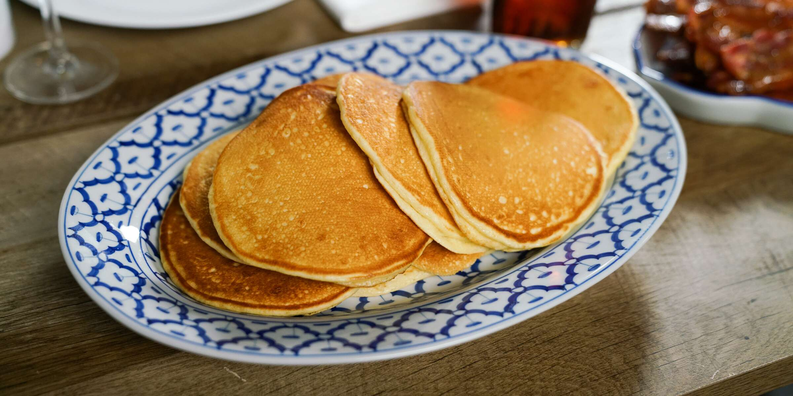

Pancake Recipes

Description
If you eat these perfect Nigerian pancakes, iree ute gi which means, you sell your mat and buy ingredients for pancakes!
When something makes you sell that which you use to lay down to rest, it means that thing is so worth it.
Nigerian Pancakes are moist, supple and delicious.
They are not dry and bread-like like their western counterparts.
Ingredients
- Flour
- Sugar
- Salt
- Milk
- Eggs
- Pepper
- Vegetable Oil
- Water
Steps taken to make pancake
- Break the eggs into a big enough bowl. See video below for important recommendations on breaking several eggs when preparing anything.
- Beat the eggs very well and add one third of the water. Stir till well combined.
- Sift the flour into the bowl.
- Mix by stirring the middle till everything is well combine. Crush any lumps that form.
- Add the evaporated milk, sugar and salt.
- Add a bit more water, mix very well, add a bit more water mix and keep doing that till all the water has been used up. If you mixed correctly, you should not have lumps but if you have lumps, pass the mix through a sieve with a wire mesh or use a handmixer to whisk it.
- Pour a tiny amount of oil into a frying pan. When it heats up, pour in a thin layer of the pancake mix into the pan. See the video below for the technique I use to get the perfect layer that is smooth at the edges.
- When the top of the batter cakes, flip the pancake with a spatula to fry the other side.
- When the bottom side becomes golden to your liking, take it off and place in a flat plate. Fry the remaining pancake mix the same way.
- Serve with youghurt, jam, Akamu, Ogi or Pap, Oatmeal, Smoothies, Hot Chocolate, Juices etc.